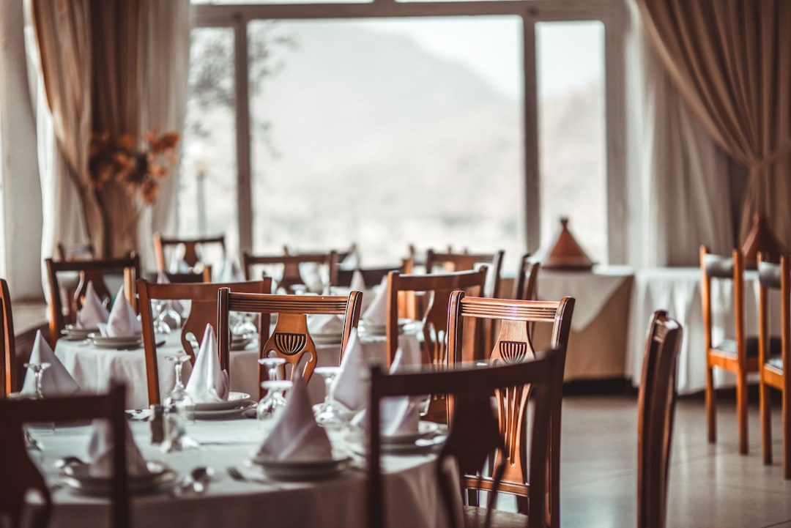

Ristorazione 4.0: Come Smart Experience / Taste Engine Rivoluziona la Gestione del Menu e l’Interazione con il Cliente

Ristoratori, Chef e Titolari Ho.Re.Ca.: Ottimizzate il Vostro Menu e l’Esperienza Clienti con Smart Experience / Taste Engine
- Menu PDF tradizionali spesso sgranati e poco interattivi impattano negativamente sull’esperienza cliente e rallentano il lavoro in sala.
- I camerieri sovraccarichi non riescono a spiegare efficacemente piatti e allergeni, con conseguenti errori e insoddisfazione.
- Smart Experience / Taste Engine offre un e-menu AI integrato che unisce storytelling, abbinamento vini e video emozionali, migliorando efficienza e vendite.
Analisi Approfondita della Notizia e delle Implicazioni Operative
Nel comparto Ho.Re.Ca., la digitalizzazione del menu è diventata un requisito chiave per adattarsi alle esigenze moderne della clientela, soprattutto in un’epoca post-pandemica in cui l’igiene e la rapidità del servizio sono prioritarie. Tuttavia, molte attività continuano a utilizzare menu in formato PDF o cartaceo, spesso di bassa qualità e poco aggiornati, creando un’esperienza utente frustrante. I menu digitali statici mancano inoltre di integrazione interattiva e personalizzazione, elementi oggi fondamentali per coinvolgere il cliente e guidarlo nelle scelte gastronomiche.
Parallelamente, il personale di sala – pilastro del servizio di qualità – si ritrova spesso sopraffatto da richieste continue di dettagli su piatti, ingredienti e allergeni, limitando la capacità di dedicarsi all’accoglienza e aumentando il rischio di errori. Questi fattori evidenziano un gap operativo che, se non colmato, rischia di compromettere seriamente la soddisfazione clientelare e la reputazione del locale.
Le Conseguenze e i Costi di Non Agire
Continuare a utilizzare menu PDF sgranati ed esclusivamente testuali significa per i ristoratori e titolari di locali affrontare quotidianamente inefficienze operative e opportunità perse. Il personale di sala, oberato da richieste di informazioni e spiegazioni, non riesce a offrire un servizio fluido e qualificato, aumentando lo stress e il turnover. Inoltre, l’incapacità di comunicare chiaramente contenuti quali allergeni espone all’aumento del rischio legale e di insoddisfazione da parte dei clienti più attenti alla salute.
In termini economici, ciò si traduce in una minore rotazione dei tavoli, calo delle vendite di piatti premium e abbinamenti vini, nonché in una riduzione del passaparola positivo, elemento cruciale nel settore Ho.Re.Ca. La mancata ottimizzazione della customer journey digitale si traduce in una reale perdita di competitività in un mercato sempre più digital e customer-centric.
Come Smart Experience / Taste Engine Risolve il Problema
Offrire ai clienti un’esperienza digitale immersiva e smart è oggi possibile grazie a Smart Experience / Taste Engine di RM Studio, uno strumento SaaS pensato appositamente per ristoratori, chef e titolari di attività Ho.Re.Ca. Questo e-menu interattivo con Maître Virtuale AI, che si presenta in un’interfaccia stile WhatsApp, facilita la comunicazione tra cliente e locale permettendo una consultazione rapida e dettagliata di piatti e allergeni.
Le sue funzionalità integrano storytelling accurato dei piatti, video che trasmettono l’atmosfera unica del locale e un sistema di abbinamento vini gestito da un sommelier virtuale, aumentando così il valore percepito e le probabilità di upselling. L’adozione di Smart Experience elimina la dipendenza da menu PDF statici, liberando il personale di sala da spiegazioni ridondanti e migliorando il tempo di servizio.
Inoltre, l’implementazione è semplice e conveniente: con un investimento una tantum di soli €390,00 si ottiene un sistema senza abbonamenti, comprensivo di un jingle promozionale personalizzato, senza costi ricorrenti e con supporto dedicato. Questo rappresenta un vantaggio competitivo reale per chiunque voglia innovare il proprio locale senza gravare sul budget operativo.
| Gestione Tradizionale | Con Smart Experience / Taste Engine |
|---|---|
| Menu in PDF statici e sgranati visualizzati su dispositivi diversi | E-menu adattivo, chiaro e interattivo ottimizzato per ogni device |
| Camerieri impegnati a fornire spiegazioni lunghe, rischio errori su allergeni | Maître Virtuale AI risponde a domande su piatti, ingredienti e allergeni in tempo reale |
| Assenza di storytelling e contenuti multimediali che valorizzino il piatto e il locale | Storytelling immersivo con video e presentazioni che valorizzano l’esperienza gastronomica |
| Vendite e ricavi da abbinamento vini limitati e poco personalizzati | Sommelier virtuale consiglia abbinamenti su misura per ogni piatto e cliente |
| Costi ricorrenti per aggiornamenti, stampa e materiale cartaceo | Sblocco una tantum, senza abbonamenti, con aggiornamenti continui integrati |
💡 Ti è stato utile questo approfondimento?
Condividilo con un collega o un amico del settore Ristoratori, Chef, Titolari di Locali e Attività Ho.Re.Ca. a cui potrebbe interessare!
FAQ: Domande Frequenti per Professionisti Ho.Re.Ca.
1. Come viene implementato Smart Experience / Taste Engine nel mio locale?
L’implementazione è semplice, senza necessità di infrastrutture particolari: basta dotare il locale di dispositivi per la visualizzazione o invitare i clienti a utilizzare il proprio smartphone. Il nostro team offre supporto dedicato per un setup rapido e personalizzato.
2. È necessario un abbonamento mensile per mantenere attivo il servizio?
No, il servizio prevede un pagamento una tantum di €390,00 che include il software, il jingle promozionale esclusivo e gli aggiornamenti continui, senza abbonamenti o costi nascosti.
3. In che modo il Maître Virtuale AI assiste il cliente?
Il Maître Virtuale AI interagisce con i clienti rispondendo in tempo reale a domande sul menu, sugli ingredienti specifici e sugli allergeni, offrendo inoltre consigli su abbinamenti vini e dettagli sullo storytelling di ogni piatto, migliorando notevolmente l’esperienza e la soddisfazione.
Inizia Subito
Sblocco una tantum a €390.00 senza abbonamenti con Jingle promozionale incluso.
Fonti Ufficiali e Risorse Esterne
Scopri l'Intelligenza Artificiale per la tua attività
Ottimizza i processi e aumenta le vendite con le soluzioni B2B di RM Studio.
Scopri Smart Experience / Taste Engine